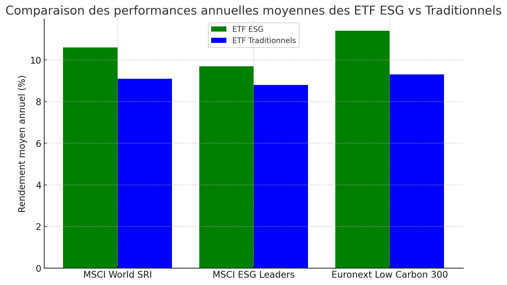
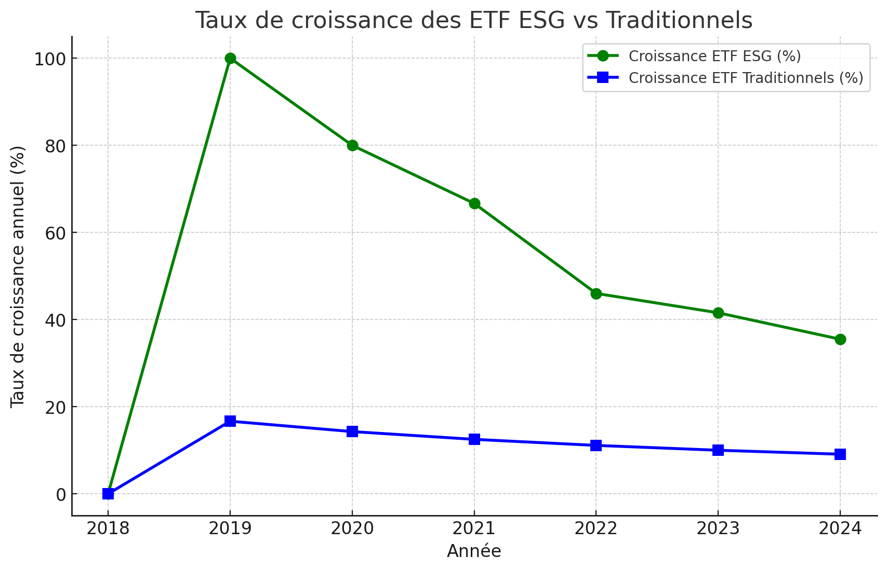
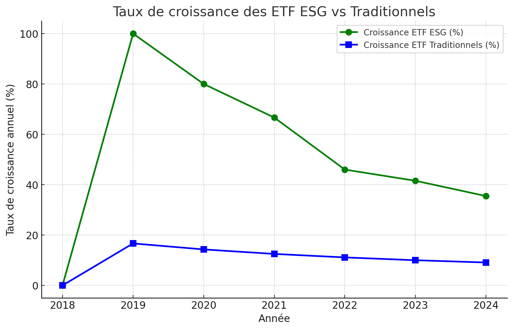

BCI est conçu pour être un ETF crypto écologique se distinguant par sa sélection dynamique de cryptomonnaies respectueuses de l'environnement. Cette approche permet d'intégrer de nouveaux actifs écologiques au fur et à mesure de leur apparition, garantissant ainsi que le BCI reste à la pointe de l'innovation verte dans le secteur crypto.
 

Cette stratégie proactive et dynamique positionne le BCI comme un véritable précurseur dans le domaine des ETF ESG, offrant aux investisseurs une opportunité unique de participer à un portefeuille évolutif, aligné sur les avancées technologiques et les impératifs environnementaux.
üå± Qu'est-ce qui Rend BubbleChain Index Unique ?
Dans un secteur o√π l‚Äôempreinte carbone est un sujet de plus en plus pr√©occupant, BCI propose une alternative verte et rentable, align√©e avec les nouvelles attentes des investisseurs ESG et des institutions.üéØ Objectif du BCI :
✅ Offrir aux investisseurs un panier diversifié des cryptomonnaies les plus durables et énergétiquement efficaces.
✅ Répondre à la demande croissante pour des produits financiers alignés avec des critères ESG.
✅ Promouvoir un écosystème blockchain plus vert, efficace et responsable.
✅ Générer de la valeur long terme pour Index Coop et ses investisseurs grâce à une stratégie optimisée de gestion et de rééquilibrage.